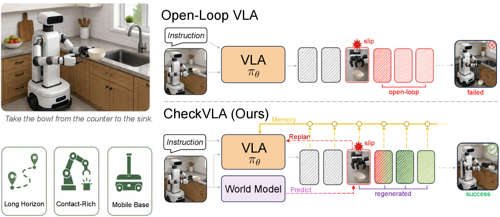
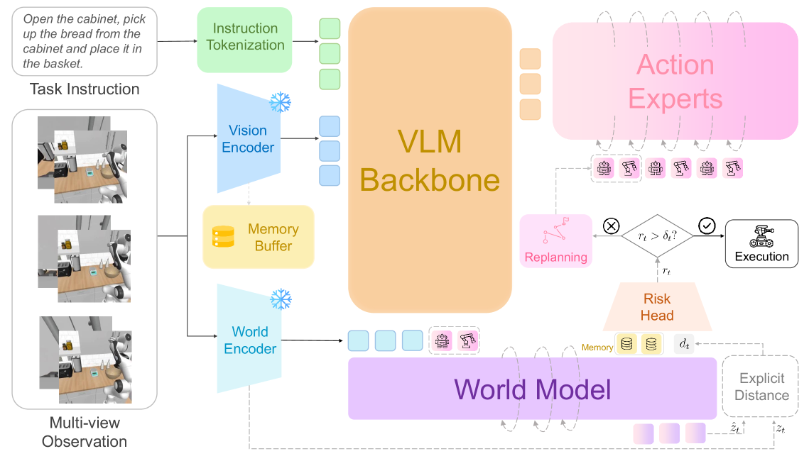

제출: 2026년 7월 29일 · 벤치 RoboCasa365(365 태스크·2,500 kitchens) · Human300 학습
한 줄 요약 (TL;DR)
VLA가 open-loop action chunk를 통째로 뱉으면 중간에 편차가 생겨도 남은 액션이 오류를 계속 전파한다. CheckVLA는 별도로 학습한 동결 action-conditioned world model이 "이 액션이면 관찰이 이렇게 흘러야 한다"는 예측을 만들고, 실제 관찰과의 편차를 conformal calibration으로 임계화해 중간 개입 여부를 결정한다. RoboCasa365에서 평균 성공률 36.1%(주기 replanning 27.6% 대비 +8.5%p), 5% false-alarm 타깃에서 timely recall 77.9%(observation-only 48.6%). "action-conditioned"가 핵심 — action 신호 제거 시 recall이 40%p 급락.
1배경 · 문제의식
현대 VLA는 action chunk H(수십 step)를 한 번에 커밋하고 열린 루프로 실행한다. 이는 지연·jitter를 흡수하지만 중간 편차(미끄러짐·물체 이동)를 감지하지 못하고 남은 액션이 오류를 증폭한다. 대안인 (a) 정책 confidence는 chunk 발행 시점만 재고, (b) 관찰만 보는 anomaly detection은 액션 컨텍스트가 없어 "예상된 변화"와 "실제 문제"를 구분 못 한다. 저자들은 액션-조건부 예측 vs 실제 관찰의 편차 자체가 신호이며, 이 통계를 conformal로 조정하면 episode 수준 false-alarm 보장을 갖는 실행-시 검증기가 된다고 제안.
2핵심 Contribution
Action-Conditioned World Model 기반 검증 — 정책과 분리·동결된 예측기 Ψ가 커밋된 액션·현재 관찰·proprio를 받아 다음 k step feature를 예측. 실제 관찰과의 편차가 검증 신호.
Conformal risk head + calibration — 편차를 span-wise 정규화 → causal risk head R → 함수형 conformal 임계 δt=μr,t+q̂ασ̃r,t. episode-level FWER ≤ α 보장.
Latency-aware hard prefixing + event-driven keyframe banking — 지연 dlat 이내 후보는 실행 중 액션에 clamp, 그 이후만 교체. 진행 단서를 gated cross-attention으로 재사용해 재계획의 과거 진행 소실 방지.
3Method
Action-Conditioned World Model Ψ
Ψ는 최신 관찰 feature zt', 이전 예측, 커밋된 액션 āt':t'+i, proprio rollout을 입력으로 다음 k ≪ H step의 feature를 예측한다. Ψ는 정책과 독립적으로 사전학습되고 실행 시엔 동결. 실제 관찰 feature와의 residual rt가 원시 편차 신호.
개입이 결정되면 정책이 새 chunk를 생성하지만, 추론 지연 dlat step 안의 후보 h < dlat는 이미 실행 중이라 고정(clamp). h ≥ dlat부터 새 액션 배치. 편차 초과량이 클수록 가이던스 강도를 키워 suffix rewriting을 강하게(adaptive guidance).
Event-Driven Keyframe Banking
진행 단서(파지 성공 순간 등)를 감지해 keyframe bank ℬt에 정책 feature를 저장. 정책은 gated cross-attention으로 이를 조회하고, risk head는 요약 m(ρt)만 받아 재계획 시 과거 진행 소실을 방지.
Ψ 예측 horizon k: k ≪ H일 때 최적. 너무 길게 예측하면 시각 표류로 신호 무뎌짐.
6핵심 Figure / Table

Figure 1 — CheckVLA 개요. Frozen action-conditioned world model이 커밋된 액션을 조건으로 다음 관찰을 예측하고, 실제 관찰과의 편차를 conformal 임계로 판정해 중간 개입을 트리거. (출처: arXiv:2607.26789)

Figure 2 — 검증·수리 파이프라인. risk head → conformal 임계 δt → hard prefix로 latency 반영 → keyframe bank로 과거 진행 재사용. (출처: arXiv:2607.26789)
Table (Detector 비교) — CheckVLA 77.9% vs Observation-only 48.6% vs Action-shuffled 37.9%. "action-conditioned"가 없으면 checker는 무너진다는 핵심 실험. Conformal 보장은 α=5% 유지.